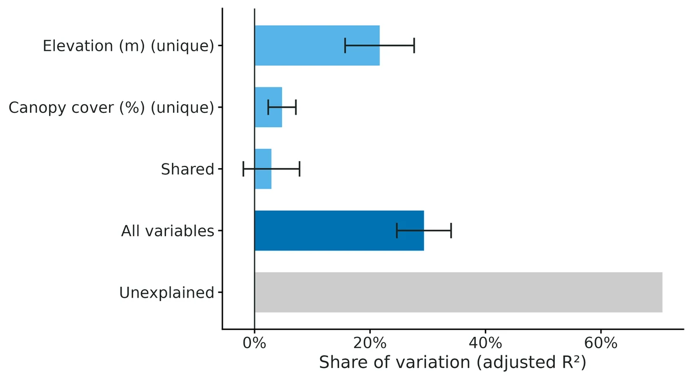
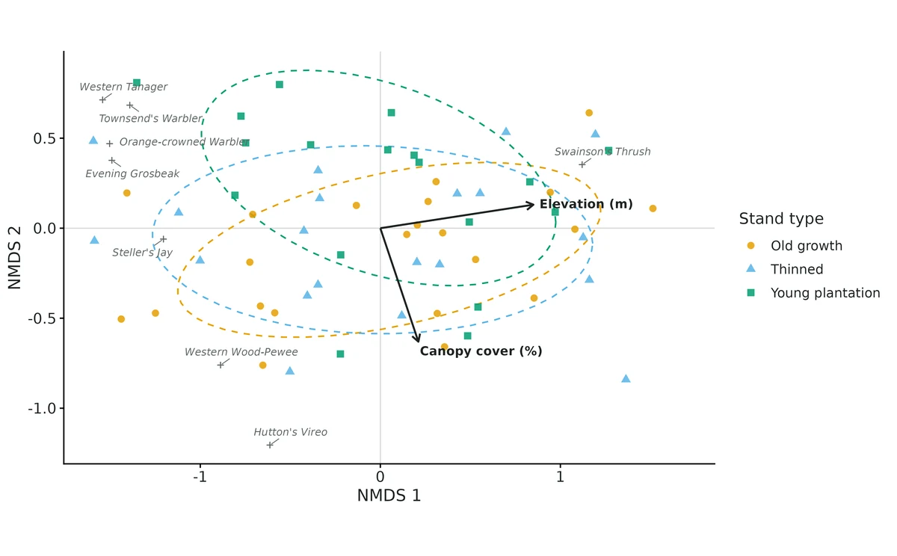
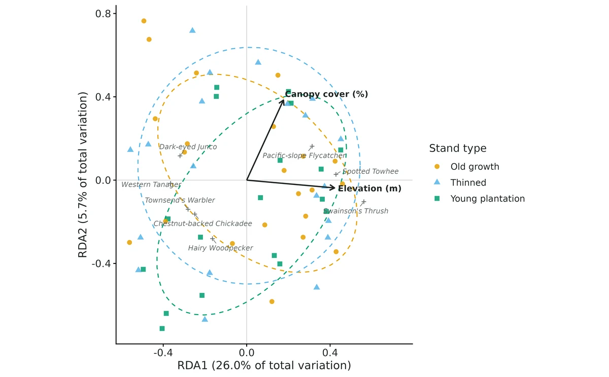
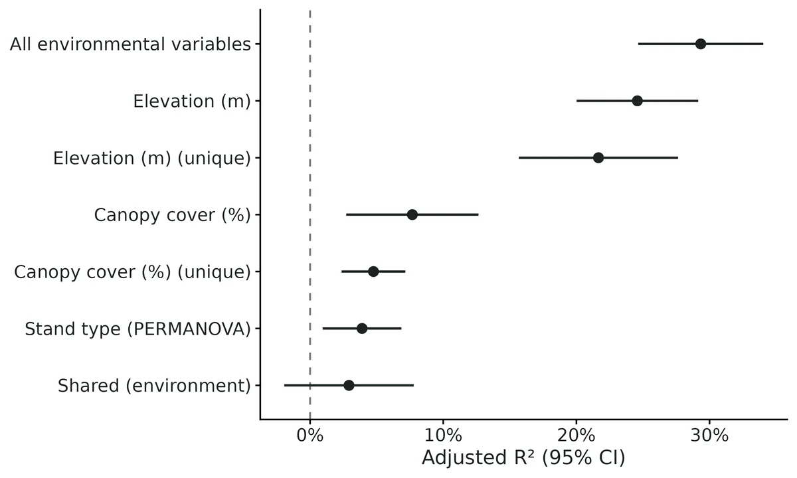

Community composition - ordination, RDA and variation partitioning, PERMANOVA with dispersion test, beta-diversity partitioning, indicator species
A site x species table (counts, cover, biomass or presence/absence) from many sites plus a site table of environmental variables and/or groups (habitat types, treatments, regions, years); questions like "how much of the variation in species composition is related to elevation vs canopy cover?", "do burned and unburned plots hold different communities?", "is beta diversity driven by species replacement or species loss?", "which species characterise each habitat?", or "draw me an ordination".
Is this the right analysis?
Use it when
A site x species table (counts, cover, biomass or presence/absence) from many sites plus a site table of environmental variables and/or groups (habitat types, treatments, regions, years); questions like "how much of the variation in species composition is related to elevation vs canopy cover?", "do burned and unburned plots hold different communities?", "is beta diversity driven by species replacement or species loss?", "which species characterise each habitat?", or "draw me an ordination".
Not for
Individual species' responses with uncertainty from imperfect detection (use occu-single / occu-spatial / nmixture, or a joint species distribution model, jsdm); species interactions (occu-rota, occu-waddle); fewer than about 10 sites or 3 species; time series of one community (timeseries); phylogenetic or functional beta diversity (betapart can do it, not wired here); causal claims about what drives composition (use causal / sem with stated assumptions).
The data you need
Species CSV, wide (one row per site, one column per species) or long (site, species, count); site CSV with the same site ids, numeric environmental variables and an optional grouping column.
What the example's main data file looks like:
| station | PSFL | PAWR | HEWA | CBCH | BRCR | GCKI | VATH |
|---|---|---|---|---|---|---|---|
| CAS-01 | 0 | 3 | 1 | 2 | 0 | 17 | 2 |
| CAS-02 | 0 | 3 | 2 | 0 | 1 | 0 | 1 |
| CAS-03 | 0 | 0 | 0 | 5 | 2 | 2 | 3 |
| CAS-04 | 1 | 8 | 0 | 0 | 0 | 0 | 0 |
| CAS-05 | 0 | 2 | 0 | 0 | 1 | 0 | 0 |
Not sure? Use the finder to compare modules.
The worked example
Forest bird communities along elevation and canopy gradients and among stand types (simulated Oregon Cascades point counts)
The question: How much of the variation in breeding-bird community composition among 60 stations goes with elevation versus canopy cover; do old growth, thinned and young plantation stands hold different communities (and differ in variability); is beta diversity turnover or nestedness; and which species indicate each stand type?
The data are simulated, so the true answer is known and the analysis can be checked against it.
What the researcher typed
I have bird point counts from 60 forest stations (cascades_bird_counts.csv, one column per species) and a station table with stand type, elevation and canopy cover (cascades_stations.csv). How much of the variation in the bird community goes with elevation versus canopy cover, do old growth, thinned and young plantation stands hold different communities, is it turnover or nestedness, and which species are indicators of each stand type? Please give me a report and figures I can use in a paper.
Run it yourself
Download the example data below and unzip it.
Open the unzipped folder in Claude Code (see Install).
Paste the prompt above. The agent checks the files, writes a plan, runs planted truth, fits the model and writes the report. You can compare your results with the ones below.
Contains cascades_bird_counts.csv, cascades_stations.csv, the settings file (config.yaml), a description of the data and a step-by-step walkthrough.
Study design details
| n sites | 60 |
|---|---|
| n species | 30 |
| n groups | 3 |
| group sizes | old growth: 22; thinned: 20; young plantation: 18 |
| n gradients | 2 |
| gradients | elevation_m (407-1582), canopy_cover_pct (14-88) |
| env cor | 0.4 |
| visits per site | 1 |
| data type | abundance |
| total birds | 1774 |
Results from the example data

In plain language
- Together the variables accounted for 29.3% (95% CI 24.6% to 34.0%) of the among-site variation (adjusted R2, p = 0.001), leaving 70.7% unexplained.
- Elevation (m) alone 24.6% (95% CI 20.0% to 29.1%) (p = 0.001); elevation after accounting for the other variables 21.7% (95% CI 15.7% to 27.6%) (p = 0.001); Canopy cover (%) alone 7.7% (95% CI 2.7% to 12.6%) (p = 0.001); canopy cover after accounting for the other variables 4.8% (95% CI 2.4% to 7.2%) (p = 0.001).
- The shared fraction, 2.9% (95% CI -1.9% to 7.8%), is variation that cannot be attributed to one variable because the variables are correlated with each other; it is not an interaction and has no test. [Agent note: its interval failed the planted-truth coverage gate at this design (0.890); report it as descriptive.]
- The association is correlational: unmeasured variables that co-vary with elevation (m) could produce the same pattern.
- Stand type groups differed in composition: group membership accounted for 3.9% (95% CI 0.9% to 6.9%) of the variation in Bray-Curtis dissimilarities (PERMANOVA adjusted R2, p = 0.011).
- Because PERMDISP found no dispersion difference (p = 0.776), the PERMANOVA result is most consistent with a shift in average species composition (location). PERMDISP has limited power for modest differences in spread, though, so a smaller contribution from dispersion cannot be ruled out.
- Golden-crowned Kinglet was an indicator of young plantation after false-discovery-rate correction (IndVal 0.78, A 0.83, B 0.72, p = 0.030).
- Two sites differed on average by Sorensen dissimilarity 0.63 (95% CI 0.61 to 0.66); 85% (95% CI 81% to 88%) of this was turnover. Composition changes mainly by replacement.
More figures



Figures are the module's default publication figures, reduced for the web. The report also saves them as PDF and full-resolution PNG.
Planted truth at the example's design
Before trusting the example's results, the module was run on many simulated data sets with the same design and known true values. Each row is one quantity: did the method get it back? (What the thresholds are.)
Planted-truth gate at the example design: 10/11 estimands PASS; R2adj_shared FAILS on coverage (0.890 < 0.904) and the report prints an interval for it. All other gate steps pass (no MCMC; NMDS/DCA/CCA/db-RDA/PERMDISP checks clean; cross-check vs vegan/betapart to 3e-16 and negative controls in VALIDATION.md). Everything except the shared-fraction interval can be reported.
10 of 11 rows pass.
| Quantity | True value | Average estimate | Bias | Coverage | Result |
|---|---|---|---|---|---|
| R2adj_elevation_m | 0.293 | 0.291 | -0.8% | 0.95 | ✓ PASS |
| R2adj_canopy_cover_pct | 0.11 | 0.109 | -0.3% | 0.94 | ✓ PASS |
| R2adj_unique_elevation_m | 0.247 | 0.245 | -0.6% | 0.94 | ✓ PASS |
| R2adj_unique_canopy_cover_pct | 0.0635 | 0.0636 | -0.4% | 0.95 | ✓ PASS |
| R2adj_shared | 0.0462 | 0.0456 | +2.8% | 0.89 | ✗ FAIL |
| R2adj_env_total | 0.356 | 0.354 | -0.6% | 0.94 | ✓ PASS |
| R2adj_stand_type_permanova | 0.0968 | 0.0996 | +3.0% | 0.97 | ✓ PASS |
| beta_sor_pair_mean | 0.523 | 0.525 | +0.3% | 0.96 | ✓ PASS |
| beta_sim_pair_mean | 0.442 | 0.444 | +0.6% | 0.96 | ✓ PASS |
| beta_sne_pair_mean | 0.0818 | 0.081 | -1.0% | 0.93 | ✓ PASS |
| turnover_share | 0.843 | 0.844 | +0.2% | 0.95 | ✓ PASS |
Limits that matter
- Shared fraction: jackknife CI too narrow at this design (coverage 0.890 over 200 replicates) and when groups differ in variability or n < ~30 sites; report it without an interval; it has no test (VALIDATION.md limits 1-3).
- Jackknife CIs are not tests: use permutation p-values to decide whether an effect exists; the PERMANOVA R2 CI is conservative (limit 4).
- PERMANOVA confounds location and dispersion in unbalanced designs; here groups are near-balanced (22/20/18) and PERMDISP p = 0.78, but PERMDISP has limited power (it missed the simulated 1.4x dispersion of young plantations) and is mildly liberal (7.2% at alpha 0.05) (limit 5).
- No detection or effort model: results describe birds as counted on one 10-min visit; missed birds inflate apparent turnover (limit 6).
- Sites assumed exchangeable; no restricted permutations for clustered stations (limit 7).
- Associations, not causes: elevation stands in for correlated factors.
- NMDS, DCA, CCA, db-RDA, multi-site beta and indicator values are descriptive, checked by tests and inspection only (limit 8); NMDS did not repeat its best solution in 50 starts (stress 0.163).
All known limits from the module's validation record
Small designs (about 24 sites or fewer).
- The jackknife intervals for the shared fraction (coverage 0.855) and for mean nestedness (0.885) are too narrow.
- The unique fraction of a weak gradient is biased upward by about 10%.
- With fewer than about 30 sites, report the shared fraction and nestedness as descriptive values without interval claims.
Strongly heteroscedastic sites (one group 3× noisier; Section 4d).
- Jackknife coverage drops to 0.84–0.86 for the marginal R2 of the weaker gradient and for the shared fraction.
- The PERMANOVA R2 is biased in whichever direction the group-size and dispersion imbalance pushes it.
- When PERMDISP is significant, treat these intervals and the PERMANOVA R2 with caution.
- The shared fraction at a true value of 0 has jackknife coverage of 0.83, and the shared fraction has no test (Peres-Neto et al. 2006).
Jackknife CIs are not tests.
- The marginal R2adj CI excludes 0 in 8.5% of null datasets.
- The PERMANOVA R2 CI almost never excludes 0 under weak effects.
- Use the permutation p-values for hypothesis tests and the CIs for effect sizes.
- PERMANOVA confounds location and dispersion in unbalanced designs (validated in Section 4c). This is a property of the method, so the module reports PERMDISP alongside it.
- No detection or effort model. Truths and estimates are for the community as sampled. Unequal effort among sites shows up as composition differences and nestedness.
- No restricted permutations for nested or blocked designs (plots within stands). Sites are assumed to be exchangeable.
- Descriptive outputs have no recovery test: NMDS, DCA, CCA, db-RDA, multi-site β, the dispersion ratio and indicator values. They are checked by the tests in Section 4c and by inspection only.
Engine, references and full details
Engine: hand-written RDA / variation partitioning (adjusted R2), PERMANOVA sums of squares and Baselga (2010) pairwise components with delete-one-site jackknife intervals (identical to vegan::varpart, RsquareAdj, adonis2 and betapart::beta.pair); vegan permutation tests, NMDS, DCA, CCA, db-RDA, envfit, betadisper; betapart (multi-site); indicspecies (IndVal.g).
References
See module$references (printed by core/run.R describe community). Key sources: Legendre & Gallagher 2001; Borcard et al. 1992; Peres-Neto et al. 2006; Anderson 2001, 2006; Anderson & Walsh 2013; Warton et al. 2012; Baselga 2010; Baselga & Orme 2012; Dufrene & Legendre 1997; De Caceres & Legendre 2009; ter Braak 1986; Legendre & Legendre 2012; vegan (Oksanen et al.).